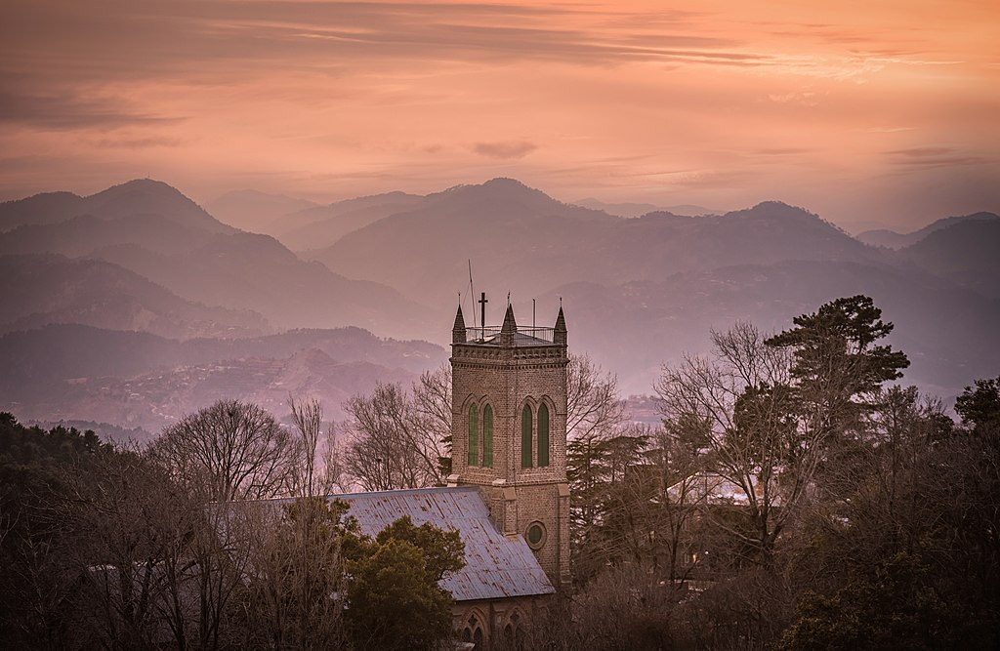
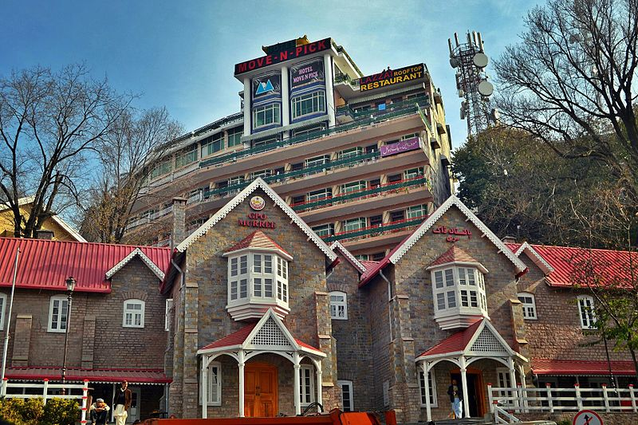

Undoubtedly, Murree Tours 2022 are the most popular these days as the summer trips begin to start. Murree, also known as “The Queen of Mountains” is located in the Galyat region and within the Rawalpindi District of Punjab, Pakistan. With an altitude of 2,291 meters, Murree is about 30KM from Islamabad Capital city. The national highway and motorway extension for Murree have made the trip from Islamabad to Murree, smooth and comfortable.
Here is the list of some famous tourist points in Murree.
Last but not least, one of the most attractive thing for the tourists especially children visiting Murree is
the
Additionally, Murree has a couple of chairlifts which provide a breathtaking view of the Murree
mountains
and surrounding areas. Chairlifts are in Ayubia, Pindi point, and Patriata.
Murree is accessible by road from the centre of the Islamabad and Rawalpindi areas. It is still associated with Britain; many British fruits (including cherries, raspberries and strawberries) thrive locally. There is a church, built in 1857, located at the centre of the town, which is still used as a place of worship. Many houses around the church are still standing, functioning mostly as hotels. Old traditional restaurants have been replaced by fast food shops and newer restaurants.
Murree's Mall Road is famous small stretch of road having number of shops and restaurant. It's popular among people around the country and tourist all over the world. Mall Road is a huge populated road in Murree infact during summer it would be jam for traffic due huge number of people walk on this road. Mall Road is a best crowded shopping place in Marree for buying anything.
Yes, Murree is always worth visiting as tourists can have all-natural amenities in one place. From towering mountains to dense deep forests, clean waterfalls to pleasant weather. Tourists recommend Murree and the surrounding area as a popular honeymoon destination, especially in winter.